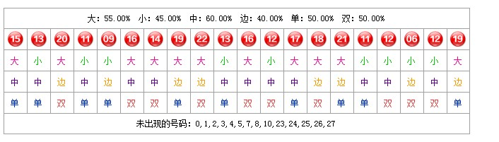
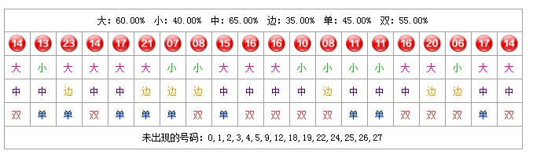
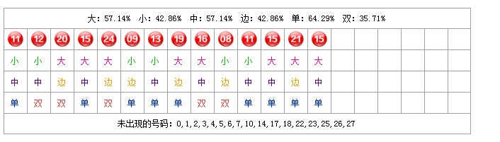
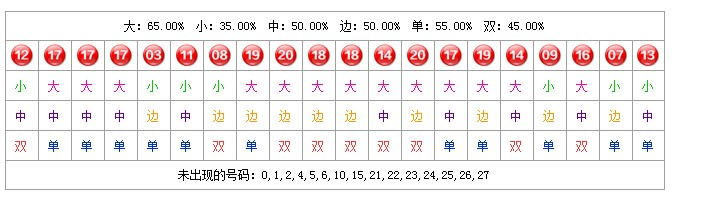

这张统计表格显示的是最近一期开奖号码在之前20次出现时它下一期所开的号码。假设当前第55555期开奖号码为“8”进入55556期竞猜。那么此时这张统计表里所显示的号码为之前20次开奖结果为“8”这个号码之后一期所开出的号码。
例：当前刚开奖的第55555期的开奖号码为“8”。表内显示的统计数据为：
上次开“8”后接着一期开“5”
上上次开“8”后接着一期开“13”
上上上次开“8”后接着一期开“21”
上上上上次开“8”后接着一期开“11”
。。。。一共统计之前20次开“8”之后的数据。
那么此统计表格内第一行显示的数据是“5”。第二行显示的数据是“13”。第三行显示的数据是“21”。第4行显示的数据是“11”。。。。以此后推。
此图统计的数据是以最新一期的开奖号码为基准，目的是从每次这个号码出现后，后一期所开号码的角度出发帮助用户辅助参考和分析当前竞猜期可能会开的号码的走势情况。

这张统计表格显示的是最近一期竞猜号码在之前的20个小时里每个小时的相同时间所开的号码数据。假设当前55555期已开奖。开始进入第55556期竞猜它的开奖时间为（2013-7-15 16：40）。此时这张统计表里所显示的数据是之前20个小时每个小时里第40分钟时所开奖的号码。
例：2013-7-15 16：40是当前这一竞猜期的开奖时间。表内显示的统计数据为：
2013-7-15 15：40那期开奖号码为“10”
2013-7-15 13：40那期开奖号码为“22”
2013-7-15 12：40那期开奖号码为“18”
11：40那期开奖号码为“15”
。。。。。。。一直统计之前20个小时里的数据。
那么此统计表格内第一行显示的数据是“10”。第二行显示的数据是“22”。第三行显示的数据是“18”。第四行显示的数据是“15”。。。。。以此后推。
此图统计的数据是以每小时为单位，目的是从每小时里的同一开奖时间所开号码的角度出发帮助用户辅助参考和分析当前竞猜期可能会开的号码的走势情况。

这张统计表格里显示的数据和“同分钟统计图”相接近。只是所统计的数据改变为是在之前每一天这个时候所开奖的号码。假设当前55555期已开奖。开始进入第55556期竞猜它的开奖时间为（2013-7-15 16：40）。此时这张统计表里显示的数据就是之前20天里每一天的这个时间所开奖的号码。
例：2013-7-15 16：40是当前这一竞猜期的开奖时间。表内显示的统计数据为：
2013-7-14 16：40那期开奖号码为“19”
2013-7-13 16：40那期开奖号码为“13”
2013-7-12 16：40那期开奖号码为“2”
2013-7-11 16：40那期开奖号码为“21”
。。。。。。。一直统计之前20天里的数据。
那么此统计表格内第一行显示的数据是“19”。第二行显示的数据是“13”。第三行显示的数据是“2”。第四行显示的数据是“2”。。。。。以此后推。
此图统计的数据是以天为单位，目的是从每小时里的同一开奖时间所开号码的角度出发帮助用户辅助参考和分析当前竞猜期可能会开的号码的走势情况。

这张统计表格显示的是最新一期开奖号码之前20期的开奖数据。